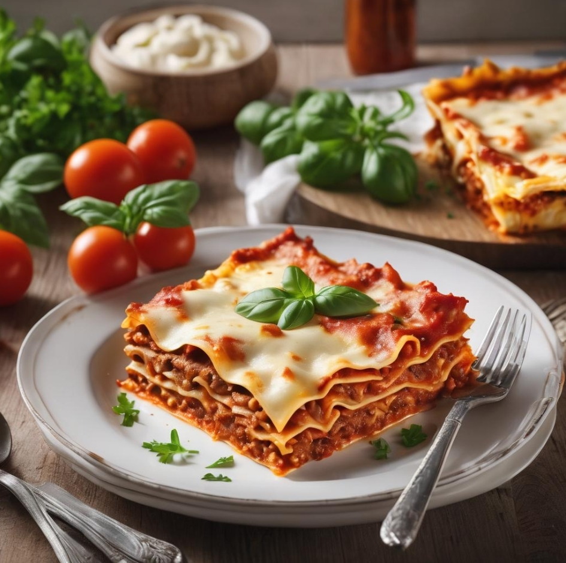

Lasagna

Description
Delight your senses with our homemade lasagna recipe, a classic Italian marvel that layers seasoned ground beef, lasagna noodles, and a rich blend of ricotta, mozzarella, and Parmesan cheeses. Slow-simmered in a fragrant tomato sauce, each bite offers a symphony of savory and velvety textures. Baked to golden perfection, the crispy top layer adds a delightful contrast, creating a satisfying harmony of flavors.
Crafted with passion and precision, our lasagna is more than a meal – it's a celebration of tradition and culinary excellence. Whether shared with loved ones or enjoyed solo, savor the moment as this dish invites you to relish the comfort and joy encapsulated in every mouthwatering bite.
Ingredients
- 1 pound (about 450g) ground beef
- 1 onion, finely chopped
- 2 cloves garlic, minced
- 1 can (28 ounces) crushed tomatoes
- 1 can (6 ounces) tomato paste
- 1 can (14 ounces) tomato sauce
- 2 teaspoons dried basil
- 1 teaspoon dried oregano
- 1/2 teaspoon salt
- 1/4 teaspoon black pepper
- 9 lasagna noodles, cooked according to package instructions
- 3 cups ricotta cheese
- 2 cups shredded mozzarella cheese
- 1 cup grated Parmesan cheese
- 1 large egg
- 2 tablespoons fresh parsley, chopped
- Olive oil for cooking
- Fresh basil leaves for garnish (optional)
Steps
- Preheat Oven: Preheat your oven to 375°F (190°C).
- Cook the Meat Sauce: In a large skillet, heat olive oil over medium heat.
Add chopped onions and minced garlic, sauté until softened. Add ground beef and cook until browned.
Stir in crushed tomatoes, tomato paste, tomato sauce, basil, oregano, salt, and pepper. Simmer for
15-20 minutes, stirring occasionally.
- Prepare the Cheese Mixture: In a bowl, mix ricotta cheese, 1 cup mozzarella
cheese, Parmesan cheese, egg, and chopped parsley until well combined.
- Assemble the Lasagna: In a baking dish, spread a thin layer of the meat sauce.
Place a layer of cooked lasagna noodles on top. Add half of the cheese mixture, spreading it
evenly. Repeat the layers, finishing with a layer of meat sauce on top.
- Bake: Cover the baking dish with foil and bake in the preheated oven for 25
minutes. Remove the foil and sprinkle the remaining mozzarella cheese on top. Bake for an
additional 10-15 minutes or until the cheese is bubbly and golden.
- Serve: Allow the lasagna to cool for a few minutes before slicing. Garnish with
fresh basil leaves if desired.